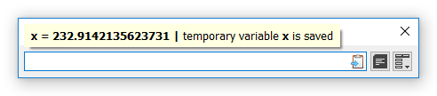

Constants and variables can be permanent - across different sessions (with check-mark), or temporary - for current session only (without check-mark), and built-in - disabled for user edit.
Permanent constants or variables should be added by Constants and Variables dialog, as they are appearing in the list already checked.
Temporary variables, on the other side, should be added by Calculation Field (see "Variable assignment" headline below), as they are appearing in the list always unchecked.
Anyway, both types can be turned into another by checking or unchecking. Note, that temporary variables must be checked within the session, as all unchecked items get removed on Exit.
Temporary variables are very handy. They can be created by Calculation Field for just one session, and disappeared after program Exit, as they are appearing in the list always unchecked.
Unlike constants and variables added by corresponding window, not only numeric values can be assigned to a variable, but also any expression. The difference is, when you put a name with an equation sign before expression, an assignment happens instead of ordinary calculation. So, in place of the expression, the assignment will be added to History.
Temporary variables can be updated the same way. Corresponding notification will be shown.

An assignment composed.

An assignment is done.
However, temporary variables can be easily turned into permanent by a check-mark in Constants and Variables dialog before Exit.